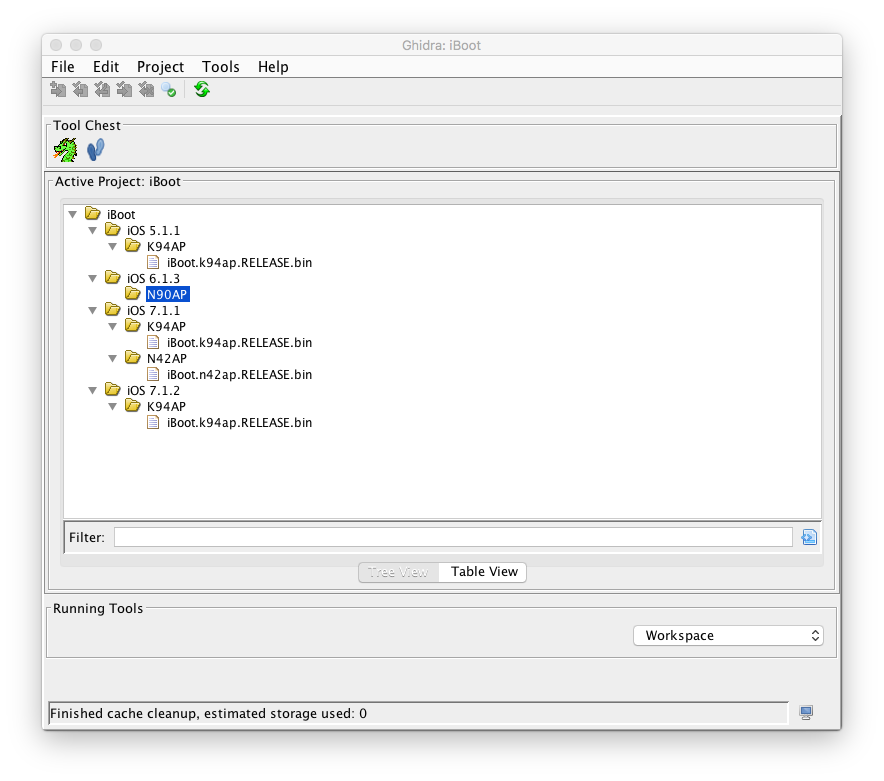

Patch LLB and iBoot
Since kloader requires images to be decrypted, signature checks will obviously fail. In order to be executed by the parent bootloader, the current bootloader images must be patched for signature checks. This can be easily done using iH8Sn0w's iBootPatcher.
This is a dynamic patcher that finds assembly code patterns in the image, search for specific instructions, then apply the proper patches.
Use iBootPatcher with the following arguments in order to prepare patched images.
a) Patching LLB :
pmbonneau-mac#iboot32patcher LLB.n90ap.RELEASE_dec.bin LLB.n90ap.RELEASE_dec_patched.bin
 b) Patching iBoot
b) Patching iBoot
pmbonneau-mac#iboot32patcher iBoot.n90ap.RELEASE_dec.bin iBoot.n90ap.RELEASE_dec_patched.bin -b "rd=disk0s1s[x] -v amfi=0xff cs_enforcement_disable=1"
Replace [x] by the partition number of your secondary iOS instance. This is the secondary iOS instance system partition (the one which has the fstab).Usually, an iOS multi-boot disk setup is organized like this.
- Main OS -
- /dev/rdisk0s1s1 (System)
- /dev/rdisk0s1s2 (Data)
- Secondary OS -
- /dev/rdisk0s1s3 (SystemB)
- /dev/rdisk0s1s4 (DataB)
- Third OS -
- /dev/rdisk0s1s5 (SystemC)
- /dev/rdisk0s1s6 (DataC)
- Fourth OS -
- /dev/rdisk0s1s7 (SystemD)
- /dev/rdisk0s1s8 (DataD)
Since I'm installing iOS 6.1.3 as a secondary OS, patching iBoot using iBootPatcher will looks like this.
pmbonneau-mac#iboot32patcher iBoot.n90ap.RELEASE_dec.bin iBoot.n90ap.RELEASE_dec_patched.bin -b "rd=disk0s1s3 -v amfi=0xff cs_enforcement_disable=1"
This will tell the kernelcache which partition is the root device, so it will be able to find launchd.As said in step 6, LLB finds an iBoot image with TYPE ibot, then iBoot searches for boot logo (logo), recovery logo (recm) and DeviceTree (dtre) in nand_firmware. Stock signed images are encrypted using GID key, which is disabled before booting from kloader. This means parent bootloaders will try to run encrypted code which will makes them panic. We have to make LLB and iBoot to search for decrypted images instead of encrypted stock ones. In most cases, patching a regular string in a binary file can be easily done using a hex editor. Search for the string then modify it directly. However, it seems the code set the img3 TYPE tag in a register as a kind of char array. The result is an operation code (OP code) that is not easy to find by searching with a hex editor. So, we will have to disassemble the bootloader images in order to find proper functions and patch the img3 TYPE tag argument passed to those. Let's use Ghidra, a free disassembly tool brought to us by NSA, to see what's going on in those Apple's iOS bootloaders.
a) Patch LLB nand_fw_search_for_image("ibot") function.
Once Ghidra is installed and properly working, open the decrypted LLB image. Before that, be sure that the image isn't wrapped into an img3 container. To verify this, open the LLB image in a hex editor and check if the bytes at 0x0 to 0x4 are 0xe0000ea (ARM Reset Vector). If they aren't, probably your image isn't properly decrypted. Open your decrypted LLB image LLB.n90ap.RELEASE_dec_patched.bin, then select "ARM v7 32-bit Little Endian Thumb" (ARM v7 32-bit Little Endian Thumb) as language. Press "OK" to continue. With Ghidra, you can organize your work on disassembled images like this.  Keep default options, then press "Analyze". Ghidra will start the image disassembly process. By default, any opened iOS bootloader images will be based to 0x00000000. In order to represent as much as possible the real device environment, you need to rebase the image to the address for which the image is set to run. The rebase address is often in the first 0x120 bytes of the image, in the ARM initialization section. You can easily notice it by the instuction bx r1 [base_addr], for which base_addr value usually has few 0's in. For example, 0x84000000 (A4 LLB) and 0x5FF00000 (A4 iBoot). Note that base_addr is shared between devices with same processor.
In this case, our rebase address for LLB is 0x84000000. Go to "Window", then "Memory Map".
Click on the house icon at the upper right, then enter the base address found in the code.
Image base address should be updated.
We now need to search for the "tobi" (because of endianess) string. It is usually located near of 0x800 to 0x1000, but this can vary from image versions. The right place in the function can be easily located by seeing this pattern movw r0, 0x6f74 ("ot") and movt r0, 0x6962 ("ib").
When you find the string, write down its address. Using a hex editor, open the image, go to this position.
Replace the "t" by "b" for ibob or replace the hex value to 62. Save the file, you can overwrite LLB.n90ap.RELEASE_dec_patched.bin with the new patch.
b) Patch iBoot nand_fw_search_for_image("[type]") function. The only image that iBoot really needs to load for the kernel to be able to boot is the devicetree. Other images such as logos aren't required, but they add more estetic look to the whole thing. The patching process is similar than what we did with LLB, but instead we search for other image strings.
Open your decrypted iBoot image iBoot.n90ap.RELEASE_dec_patched.bin, then select "ARM v7 32-bit Little Endian Thumb" (ARM v7 32-bit Little Endian Thumb) as language. Press "OK" to continue. Once your iBoot image is analyzed, look for the rebase address same we did with LLB.
Now, let's search in iBoot for functions which prepare img3 TYPE tags to find in nand_firmware. If we want to completely customize the boot process, we need to patch out three img3 TYPE values in iBoot.
- logo (boot logo)
- recm (recovery logo)
- dtre (device tree)
Third is dtre, located further in the image. In the iBoot image, search for value "0x7265" using Ghidra's search program text functionality.
Write down found address. Using a hex editor, open the image, go to this position (0x17146) then replace the "e" by "b" for dtrb or replace the hex value to 62. Patch kernelcache image path
In normal boot mode, iBoot will mount the HFS+ (or APFS) filesystem then search for a kernel image named "kernelcache" in /System/Library/Caches/com.apple.kernelcaches/kernelcache path. The kernelcache is packed into an img3 container and has the TYPE tag krnl. Secondary iBoot images will, by default, try to run kernelcache from /System/Library/Caches/com.apple.kernelcaches/kernelcache path. This will cause some unexpected behaviors in most cases because for example an old iBoot might try to load a recent iOS kernel. The kernelcache, iBoot and devicetree are closely attached to each other. Usually, they need to be from the same iOS version. To avoid this issue, let's patch the kernelcache image path in iBoot. Using a hex editor, open the image then search for "kernelcache" string. This will brings you to the first found occurence, which is not the one we need. Search for the next occurence until you find the proper path /System/Library/Caches/com.apple.kernelcaches/kernelcache. Patch the filename "kernelcache" to "kernelcachb". This will make the secondary iBoot to search for a file named "kernelcachb" instead of "kernelcache", loaded by the main iBoot. If you setup a multiboot with various iOS versions, you will have to set a different kernelcache path name for each iBoot (ex. "kernelcachc", "kernelcachd".
Reintegrate the iBoot img3 container
The prepare_and_jump_img3() routine of LLB will unpack iBoot image data (img3 DATA) to loadaddr before jumping to it. It won't be able to load a RAW payload from that routine, since it expects an img3 to be uploaded. In order to properly jump to a new image, we must encapsulate iBoot.n90ap.RELEASE_dec_patched.bin into an img3 container. We can do this using xpwntools:
pmbonneau-mac#xpwntool [in decrypted payload] [out .img3 file] -t [.img3 template]
pmbonneau-mac#xpwntool iBoot.n90ap.RELEASE_dec_patched.bin iBoot.n90ap.RELEASE_dec.img3 -t iBoot.n90ap.RELEASE_dec.img3
Rename files as follow:LLB.n90ap.RELEASE_dec_patched.bin -> LLBB.n90ap.RELEASE.bin
iBoot.n90ap.RELEASE_dec.img3 -> iBootB.n90ap.RELEASE.img3